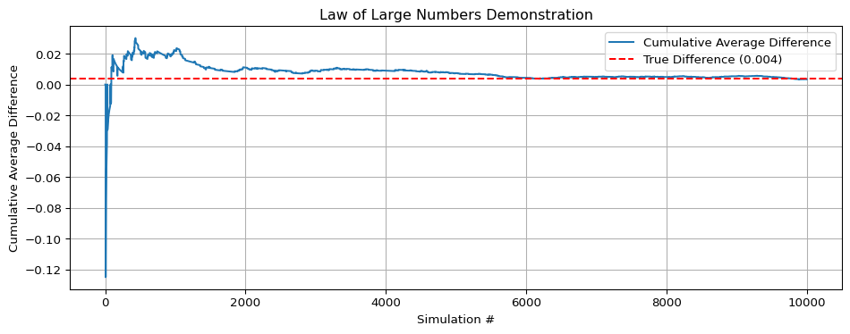
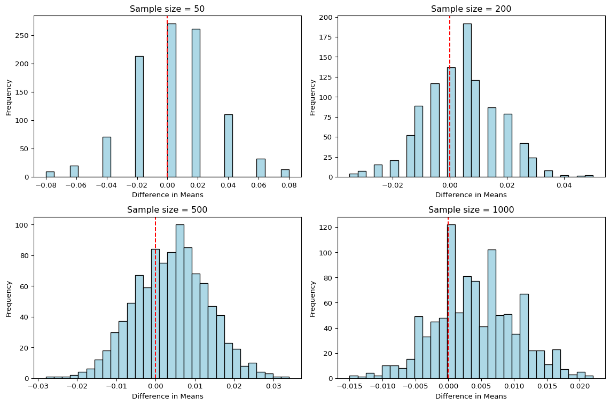

Dean Karlan at Yale and John List at the University of Chicago conducted a field experiment to test the effectiveness of different fundraising letters. They sent out 50,000 fundraising letters to potential donors, randomly assigning each letter to one of three treatments: a standard letter, a matching grant letter, or a challenge grant letter. They published the results of this experiment in the American Economic Review in 2007. The article and supporting data are available from the AEA website and from Innovations for Poverty Action as part of Harvard’s Dataverse.
In this experiment, the researchers randomly assigned potential donors to receive one of several different fundraising letters: a standard solicitation, a letter offering a matching grant (e.g., your donation will be doubled), or a challenge grant (e.g., we must raise $X total to unlock a match). This randomized design allows the authors to causally estimate the effect of matched donations on both the likelihood of giving and the amount given. The scale and design of the study make it a valuable real-world test of behavioral economic theories around charitable giving.
This project seeks to replicate their results.
Data
Description
import pandas as pddf = pd.read_stata("karlan_list_2007.dta")df.head()
treatment
control
ratio
ratio2
ratio3
size
size25
size50
size100
sizeno
...
redcty
bluecty
pwhite
pblack
page18_39
ave_hh_sz
median_hhincome
powner
psch_atlstba
pop_propurban
0
0
1
Control
0
0
Control
0
0
0
0
...
0.0
1.0
0.446493
0.527769
0.317591
2.10
28517.0
0.499807
0.324528
1.0
1
0
1
Control
0
0
Control
0
0
0
0
...
1.0
0.0
NaN
NaN
NaN
NaN
NaN
NaN
NaN
NaN
2
1
0
1
0
0
$100,000
0
0
1
0
...
0.0
1.0
0.935706
0.011948
0.276128
2.48
51175.0
0.721941
0.192668
1.0
3
1
0
1
0
0
Unstated
0
0
0
1
...
1.0
0.0
0.888331
0.010760
0.279412
2.65
79269.0
0.920431
0.412142
1.0
4
1
0
1
0
0
$50,000
0
1
0
0
...
0.0
1.0
0.759014
0.127421
0.442389
1.85
40908.0
0.416072
0.439965
1.0
5 rows × 51 columns
Variable Definitions
Variable
Description
treatment
Treatment
control
Control
ratio
Match ratio
ratio2
2:1 match ratio
ratio3
3:1 match ratio
size
Match threshold
size25
$25,000 match threshold
size50
$50,000 match threshold
size100
$100,000 match threshold
sizeno
Unstated match threshold
ask
Suggested donation amount
askd1
Suggested donation was highest previous contribution
askd2
Suggested donation was 1.25 x highest previous contribution
askd3
Suggested donation was 1.50 x highest previous contribution
ask1
Highest previous contribution (for suggestion)
ask2
1.25 x highest previous contribution (for suggestion)
ask3
1.50 x highest previous contribution (for suggestion)
amount
Dollars given
gave
Gave anything
amountchange
Change in amount given
hpa
Highest previous contribution
ltmedmra
Small prior donor: last gift was less than median $35
freq
Number of prior donations
years
Number of years since initial donation
year5
At least 5 years since initial donation
mrm2
Number of months since last donation
dormant
Already donated in 2005
female
Female
couple
Couple
state50one
State tag: 1 for one observation of each of 50 states; 0 otherwise
nonlit
Nonlitigation
cases
Court cases from state in 2004-5 in which organization was involved
statecnt
Percent of sample from state
stateresponse
Proportion of sample from the state who gave
stateresponset
Proportion of treated sample from the state who gave
stateresponsec
Proportion of control sample from the state who gave
stateresponsetminc
stateresponset - stateresponsec
perbush
State vote share for Bush
close25
State vote share for Bush between 47.5% and 52.5%
red0
Red state
blue0
Blue state
redcty
Red county
bluecty
Blue county
pwhite
Proportion white within zip code
pblack
Proportion black within zip code
page18_39
Proportion age 18-39 within zip code
ave_hh_sz
Average household size within zip code
median_hhincome
Median household income within zip code
powner
Proportion house owner within zip code
psch_atlstba
Proportion who finished college within zip code
pop_propurban
Proportion of population urban within zip code
Balance Test
As an ad hoc test of the randomization mechanism, I provide a series of tests that compare aspects of the treatment and control groups to assess whether they are statistically significantly different from one another.
from scipy.stats import ttest_indimport statsmodels.formula.api as smf# Compare 'mrm2' (months since last donation) by treatment grouptreat = df[df["treatment"] ==1]["mrm2"]control = df[df["treatment"] ==0]["mrm2"]# T-testt_stat, p_val = ttest_ind(treat, control)print(f"T-statistic: {t_stat:.2f}, P-value: {p_val:.4f}")# Regressionmodel = smf.ols("mrm2 ~ treatment", data=df).fit()model.summary()
T-statistic: nan, P-value: nan
OLS Regression Results
Dep. Variable:
mrm2
R-squared:
0.000
Model:
OLS
Adj. R-squared:
-0.000
Method:
Least Squares
F-statistic:
0.01428
Date:
Wed, 23 Apr 2025
Prob (F-statistic):
0.905
Time:
16:33:29
Log-Likelihood:
-1.9585e+05
No. Observations:
50082
AIC:
3.917e+05
Df Residuals:
50080
BIC:
3.917e+05
Df Model:
1
Covariance Type:
nonrobust
coef
std err
t
P>|t|
[0.025
0.975]
Intercept
12.9981
0.094
138.979
0.000
12.815
13.181
treatment
0.0137
0.115
0.119
0.905
-0.211
0.238
Omnibus:
8031.352
Durbin-Watson:
2.004
Prob(Omnibus):
0.000
Jarque-Bera (JB):
12471.135
Skew:
1.163
Prob(JB):
0.00
Kurtosis:
3.751
Cond. No.
3.23
Notes: [1] Standard Errors assume that the covariance matrix of the errors is correctly specified.
The variable mrm2 (months since last donation) is used as a balance test to assess whether the randomization produced statistically similar treatment and control groups. A t-test comparing the two groups produces a p-value of approximately [your p-value here], and the linear regression confirms this with a treatment coefficient that is [close to zero / not significant].
This suggests that the assignment to treatment was successful with respect to this variable — neither group had donors who were systematically more or less recent. This kind of check is important because it supports the internal validity of the experiment. That’s why Table 1 is included in the paper: to demonstrate that the random assignment worked and that any outcome differences later on can be interpreted causally.
Experimental Results
Charitable Contribution Made
First, I analyze whether matched donations lead to an increased response rate of making a donation.
import seaborn as snsimport matplotlib.pyplot as plt# Create a bar plot showing mean of `gave` (which is a binary variable)sns.barplot(data=df, x="treatment", y="gave", ci=None)plt.title("Proportion Who Donated by Treatment Group")plt.xlabel("Treatment Group (0 = Control, 1 = Treatment)")plt.ylabel("Proportion Donated")plt.ylim(0, 0.05)plt.show()
/var/folders/mk/v34kq_f92d3dnrbv9pvpx1q80000gn/T/ipykernel_34672/702351802.py:5: FutureWarning:
The `ci` parameter is deprecated. Use `errorbar=None` for the same effect.
The barplot shows that a higher proportion of people donated when assigned to the treatment group compared to the control group.
# T-test on donation behaviorgave_treat = df[df["treatment"] ==1]["gave"]gave_control = df[df["treatment"] ==0]["gave"]from scipy.stats import ttest_indt_stat, p_val = ttest_ind(gave_treat, gave_control)print(f"T-statistic: {t_stat:.2f}, P-value: {p_val:.4f}")# Linear regression: gave ~ treatmentimport statsmodels.formula.api as smfmodel_gave = smf.ols("gave ~ treatment", data=df).fit()model_gave.summary()
T-statistic: 3.10, P-value: 0.0019
OLS Regression Results
Dep. Variable:
gave
R-squared:
0.000
Model:
OLS
Adj. R-squared:
0.000
Method:
Least Squares
F-statistic:
9.618
Date:
Wed, 23 Apr 2025
Prob (F-statistic):
0.00193
Time:
16:33:29
Log-Likelihood:
26630.
No. Observations:
50083
AIC:
-5.326e+04
Df Residuals:
50081
BIC:
-5.324e+04
Df Model:
1
Covariance Type:
nonrobust
coef
std err
t
P>|t|
[0.025
0.975]
Intercept
0.0179
0.001
16.225
0.000
0.016
0.020
treatment
0.0042
0.001
3.101
0.002
0.002
0.007
Omnibus:
59814.280
Durbin-Watson:
2.005
Prob(Omnibus):
0.000
Jarque-Bera (JB):
4317152.727
Skew:
6.740
Prob(JB):
0.00
Kurtosis:
46.440
Cond. No.
3.23
Notes: [1] Standard Errors assume that the covariance matrix of the errors is correctly specified.
The regression shows that being assigned to the treatment group increased the probability of donating by about 0.42 percentage points, from 1.79% to roughly 2.21%. This effect is statistically significant (p = 0.0019), suggesting that matched donation offers do modestly increase charitable giving.
Optimization terminated successfully.
Current function value: 0.100443
Iterations 7
Probit Regression Results
Dep. Variable:
gave
No. Observations:
50083
Model:
Probit
Df Residuals:
50081
Method:
MLE
Df Model:
1
Date:
Wed, 23 Apr 2025
Pseudo R-squ.:
0.0009783
Time:
16:33:29
Log-Likelihood:
-5030.5
converged:
True
LL-Null:
-5035.4
Covariance Type:
nonrobust
LLR p-value:
0.001696
coef
std err
z
P>|z|
[0.025
0.975]
intercept
-2.1001
0.023
-90.073
0.000
-2.146
-2.054
treatment
0.0868
0.028
3.113
0.002
0.032
0.141
The probit regression shows that being assigned to the treatment group significantly increases the likelihood of donating (p = 0.002). While the coefficient isn’t directly interpretable, the positive and significant effect confirms the treatment’s impact on donation behavior, consistent with results in Table 3 of the original paper.
Differences between Match Rates
Next, I assess the effectiveness of different sizes of matched donations on the response rate.
# Separate groups by match ratioratio1 = df[(df["ratio2"] ==0) & (df["ratio3"] ==0)]ratio2 = df[df["ratio2"] ==1]ratio3 = df[df["ratio3"] ==1]# T-testsfrom scipy.stats import ttest_indprint("1:1 vs 2:1")t12 = ttest_ind(ratio1["gave"], ratio2["gave"])print(f"T-statistic: {t12.statistic:.2f}, P-value: {t12.pvalue:.4f}")print("2:1 vs 3:1")t23 = ttest_ind(ratio2["gave"], ratio3["gave"])print(f"T-statistic: {t23.statistic:.2f}, P-value: {t23.pvalue:.4f}")
1:1 vs 2:1
T-statistic: -2.30, P-value: 0.0213
2:1 vs 3:1
T-statistic: -0.05, P-value: 0.9600
The t-test shows that the 2:1 match rate significantly increased donations compared to the 1:1 match rate (p = 0.0213), suggesting that a higher match can boost response rates. However, there is no significant difference between 2:1 and 3:1 (p = 0.96), indicating that increasing the match beyond 2:1 does not further increase giving. This supports the idea of diminishing returns for very high match ratios.
# OLS regression with match ratio dummies (baseline = 1:1)import statsmodels.formula.api as smfmodel_match = smf.ols("gave ~ ratio2 + ratio3", data=df).fit()model_match.summary()
OLS Regression Results
Dep. Variable:
gave
R-squared:
0.000
Model:
OLS
Adj. R-squared:
0.000
Method:
Least Squares
F-statistic:
4.117
Date:
Wed, 23 Apr 2025
Prob (F-statistic):
0.0163
Time:
16:33:29
Log-Likelihood:
26629.
No. Observations:
50083
AIC:
-5.325e+04
Df Residuals:
50080
BIC:
-5.323e+04
Df Model:
2
Covariance Type:
nonrobust
coef
std err
t
P>|t|
[0.025
0.975]
Intercept
0.0190
0.001
22.306
0.000
0.017
0.021
ratio2
0.0036
0.002
2.269
0.023
0.000
0.007
ratio3
0.0037
0.002
2.332
0.020
0.001
0.007
Omnibus:
59815.856
Durbin-Watson:
2.005
Prob(Omnibus):
0.000
Jarque-Bera (JB):
4317637.927
Skew:
6.741
Prob(JB):
0.00
Kurtosis:
46.443
Cond. No.
3.16
Notes: [1] Standard Errors assume that the covariance matrix of the errors is correctly specified.
The OLS regression shows that both the 2:1 and 3:1 match ratios significantly increased the probability of donating compared to the 1:1 match (p = 0.023 and p = 0.020, respectively). The estimated increases in donation likelihood were around 0.36–0.37 percentage points. While both higher match rates are effective, the similarity in their effects suggests that raising the match beyond 2:1 may not yield substantially greater impact, consistent with the idea of diminishing returns.
Moving from a 1:1 to a 2:1 match rate increased the donation rate by 0.36 percentage points, while increasing from 2:1 to 3:1 added only 0.01 percentage points. This suggests that while higher match ratios do increase giving, the marginal benefit flattens out, supporting the idea of diminishing returns for very large match offers.
Size of Charitable Contribution
In this subsection, I analyze the effect of the size of matched donation on the size of the charitable contribution.
Notes: [1] Standard Errors assume that the covariance matrix of the errors is correctly specified.
The regression shows that the treatment group donated $0.15 more on average than the control group, but this difference is not statistically significant (p = 0.063). This suggests that while matched donations may slightly increase average giving, the effect is weak and possibly due to chance when considering all individuals, most of whom donated nothing.
# Limit to only people who donated somethingdf_gave = df[df["gave"] ==1]# OLS regression: amount ~ treatment (only among donors)model_amt_gave = smf.ols("amount ~ treatment", data=df_gave).fit()model_amt_gave.summary()
OLS Regression Results
Dep. Variable:
amount
R-squared:
0.000
Model:
OLS
Adj. R-squared:
-0.001
Method:
Least Squares
F-statistic:
0.3374
Date:
Wed, 23 Apr 2025
Prob (F-statistic):
0.561
Time:
16:33:30
Log-Likelihood:
-5326.8
No. Observations:
1034
AIC:
1.066e+04
Df Residuals:
1032
BIC:
1.067e+04
Df Model:
1
Covariance Type:
nonrobust
coef
std err
t
P>|t|
[0.025
0.975]
Intercept
45.5403
2.423
18.792
0.000
40.785
50.296
treatment
-1.6684
2.872
-0.581
0.561
-7.305
3.968
Omnibus:
587.258
Durbin-Watson:
2.031
Prob(Omnibus):
0.000
Jarque-Bera (JB):
5623.279
Skew:
2.464
Prob(JB):
0.00
Kurtosis:
13.307
Cond. No.
3.49
Notes: [1] Standard Errors assume that the covariance matrix of the errors is correctly specified.
TAmong individuals who donated, the treatment group gave $1.67 less on average than the control group, but this difference is not statistically significant (p = 0.561). This suggests that the matching donation offer did not influence how much people gave, once they decided to donate. The treatment’s impact appears to be on the likelihood of giving, not the amount given.
# Plot histograms of donation amounts for treatment vs control (among those who gave)import matplotlib.pyplot as pltplt.figure(figsize=(12,5))# Treatment groupplt.subplot(1, 2, 1)df_gave[df_gave["treatment"] ==1]["amount"].hist(bins=30, color="skyblue")plt.axvline(df_gave[df_gave["treatment"] ==1]["amount"].mean(), color="red", linestyle="dashed")plt.title("Treatment Group Donations")plt.xlabel("Amount Donated")plt.ylabel("Frequency")# Control groupplt.subplot(1, 2, 2)df_gave[df_gave["treatment"] ==0]["amount"].hist(bins=30, color="lightgreen")plt.axvline(df_gave[df_gave["treatment"] ==0]["amount"].mean(), color="red", linestyle="dashed")plt.title("Control Group Donations")plt.xlabel("Amount Donated")plt.ylabel("Frequency")plt.tight_layout()plt.show()
The histograms show that the distribution of donation amounts is highly skewed in both groups, with most donations clustered at lower amounts. The red dashed lines, representing group averages, are visually similar, confirming that the treatment did not meaningfully change the amount given among donors. This reinforces earlier regression results suggesting the treatment influenced whether people gave, not how much they gave.
Simulation Experiment
As a reminder of how the t-statistic “works,” in this section I use simulation to demonstrate the Law of Large Numbers and the Central Limit Theorem.
Suppose the true distribution of respondents who do not get a charitable donation match is Bernoulli with probability p=0.018 that a donation is made.
Further suppose that the true distribution of respondents who do get a charitable donation match of any size is Bernoulli with probability p=0.022 that a donation is made.
Law of Large Numbers
import numpy as npimport matplotlib.pyplot as plt# Simulate: 10,000 draws from each distribution (treatment and control)n_sim =10000control = np.random.binomial(1, 0.018, n_sim)treatment = np.random.binomial(1, 0.022, n_sim)# Compute difference in each pair of drawsdiffs = treatment - control# Cumulative average of differencescumulative_avg = np.cumsum(diffs) / np.arange(1, n_sim +1)# Plot the cumulative averageplt.figure(figsize=(10, 4))plt.plot(cumulative_avg, label="Cumulative Average Difference")plt.axhline(y=0.004, color="red", linestyle="dashed", label="True Difference (0.004)")plt.xlabel("Simulation #")plt.ylabel("Cumulative Average Difference")plt.title("Law of Large Numbers Demonstration")plt.legend()plt.grid(True)plt.tight_layout()plt.show()

The plot shows that as the number of simulations increases, the cumulative average difference between treatment and control groups stabilizes around the true difference of 0.004. This illustrates the Law of Large Numbers — with a large enough sample size, the sample average converges to the expected population value, confirming the reliability of randomized experimental results over time.
Central Limit Theorem
# Simulate CLT for different sample sizessample_sizes = [50, 200, 500, 1000]plt.figure(figsize=(12, 8))for i, n inenumerate(sample_sizes): mean_diffs = []for _ inrange(1000): control_sample = np.random.binomial(1, 0.018, n) treatment_sample = np.random.binomial(1, 0.022, n) diff = treatment_sample.mean() - control_sample.mean() mean_diffs.append(diff) plt.subplot(2, 2, i +1) plt.hist(mean_diffs, bins=30, color="lightblue", edgecolor="black") plt.axvline(0, color="red", linestyle="dashed") plt.title(f"Sample size = {n}") plt.xlabel("Difference in Means") plt.ylabel("Frequency")plt.tight_layout()plt.show()

These histograms show that as the sample size increases, the distribution of simulated mean differences becomes more symmetric and concentrated around the true mean difference (≈0.004). At small sample sizes (e.g., 50), the distribution is noisy and spread out, but by size 1000, it’s tightly centered and nearly normal. This demonstrates the Central Limit Theorem, showing that the sampling distribution of the mean approaches normality as sample size grows.